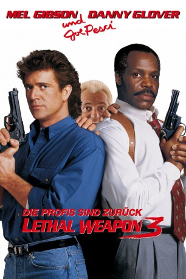

#315 Lethal Weapon 3 - Brennpunkt L.A. - Die Profis sind zurück
Alternativ: Lethal Weapon 3
 
 IMDB-Wertung: 6.7 / 10
IMDB-Wertung: 6.7 / 10  Metascore: 40
Metascore: 40 
Eines Morgens erhalten Riggs und Murtaugh einen Anruf: In einem Haus wurde eine Bombe gefunden. An Ort und Stelle glaubt Riggs die Bombe alleine entschärfen zu können und lehnt es ab, auf das Sicherungskommando zu warten. Kurz darauf liegt das Haus in Schutt und Asche. Als Strafe müssen die beiden Streifendienst fahren und stolpern prompt über die nächste Verschwörung. Schon bald wird klar, dass sie in ihren eigenen Reihen ermitteln müssen, da scheinbar Polizisten illegalen Waffenhandel betreiben. Unterstütz werden sie dabei von der hübschen Polizistin für "innere Angelegenheiten" Lorna Cole.
Jahr: 1992
Dauer: 118 Minuten
FSK: 16
Land: USA Studio: Warner Bros.Tonspuren: DD5.1 - ,
Untertitel: Deutsch, Englisch,
Auflösung: 1080p (1920×796) Größe: 14336 MB
Genre: Action, Krimi, Thriller
Regisseur:  Richard Donner
Richard Donner
Drehbuch: Jeffrey Boam, Jeffrey Boam, Robert Mark Kamen, Jeffrey Boam, Shane Black
Soundtrack: Eric Clapton, Michael Kamen, David Sanborn
Darsteller:
 Mel Gibson als Martin Riggs
Mel Gibson als Martin Riggs Danny Glover als Roger Murtaugh
Danny Glover als Roger Murtaugh Joe Pesci als Leo Getz
Joe Pesci als Leo Getz Rene Russo als Lorna Cole
Rene Russo als Lorna Cole Stuart Wilson als Jack Travis
Stuart Wilson als Jack Travis Darlene Love als Trish Murtaugh
Darlene Love als Trish Murtaugh- Traci Wolfe als Rianne Murtaugh
 Damon Hines als Nick Murtaugh
Damon Hines als Nick Murtaugh Nick Chinlund als Hatchett
Nick Chinlund als Hatchett- Alan Scarfe als Herman Walters
 Mary Ellen Trainor als Stephanie Woods
Mary Ellen Trainor als Stephanie Woods Mark Pellegrino als Billy Phelps
Mark Pellegrino als Billy Phelps John Cenatiempo als Smitty
John Cenatiempo als Smitty- Andrew Hill Newman als Jaywalker
 Kenneth Tigar als Becker - Bomb Squad Leader
Kenneth Tigar als Becker - Bomb Squad Leader Pete Antico als Henchman #1 / Hubert Bartholomew Smith
Pete Antico als Henchman #1 / Hubert Bartholomew Smith Sven-Ole Thorsen als Henchman #2
Sven-Ole Thorsen als Henchman #2 Veronica Alicino als Squad Member #1
Veronica Alicino als Squad Member #1- Henry Brown als Squad Member #2
 Miguel A. Núñez Jr. als Squad Member #4
Miguel A. Núñez Jr. als Squad Member #4 Philip Moon als Squad Member #5
Philip Moon als Squad Member #5- Paul Hipp als Doctor
- Lauren Shuler Donner als Nurse
- Stephen Kay als Movie Director
- Scott Bryce als Young Man
 Marian Collier als Patron
Marian Collier als Patron Paul Ganus als Desk Cop #2
Paul Ganus als Desk Cop #2- David Wayne Campbell als Policeman , uncredited
- Jan de Bont als Dutch Cameraman , uncredited
- Sven Granlund als Extra , uncredited
 Jack McGee als Carpenter , uncredited
Jack McGee als Carpenter , uncredited Mic Rodgers als Bomb Scene Cop #1 , uncredited
Mic Rodgers als Bomb Scene Cop #1 , uncredited- Damon Stout als Hockey Fan , uncredited
 Steve Kahan als Captain Murphy
Steve Kahan als Captain Murphy- Ebonie Smith als Carrie Murtaugh
- Gregory Millar als Tyrone
- Jason Rainwater als Young Cop
- Delores Hall als Delores
- Danny Wynands als Hershel
- Paul Tuerpe als Henchman #3
- Eric Briant Wells als Squad Member #3
- Bobby Wynn als Darryl
- Sylvia Webb White als Darryl's Mother
- Danny 'Big Black' Rey als Darryl's Father
- Vince Howard als Preacher
- Michael George Miller als Movie Assistant Director
 Henry Kingi als Movie Gun Punk
Henry Kingi als Movie Gun Punk- Adam Klineberg als Movie Cop
- Michele Landry als Young Woman
- Del Emory als Shower Cop
Datei: X:\FSK18-Collections\Lethal Weapon\Lethal Weapon 3 - Brennpunkt L.A. - Die Profis sind zurück (1992, FSK16, 1920x796).mkv seit 16.02.2015
Festplatte: FSK18
 Es gibt insgesamt 7 Filme in der Gruppe 'FSK18-Collections\Lethal Weapon'
Es gibt insgesamt 7 Filme in der Gruppe 'FSK18-Collections\Lethal Weapon'